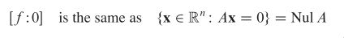
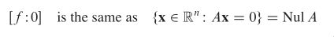

Home
Geometry of vector spaces
Hyperplane
Hyperplanes play a special role in the geometry of Rˆn be‐
cause they divide the space into two disjoint pieces, just as a
plane separates Rˆ3 into two parts and a line cuts through Rˆ2.
The key to working with hyperplanes is to use simple implicit de‐
scriptions, rather than the explicit or parametric representa‐
tions of lines and planes used in the earlier work with affine
sets.
An implicit equation of a line in Rˆ2 has the form ax + by = d.
An implicit equation of a plane in Rˆ3 has the form ax + by + cz
= d. Both equations describe the line or plane as the set of all
points at which a linear expression (also called a linear func‐
tional) has a fixed value, d.
What is a linear functional?
It is a linear transformation from Rˆn to R.
For each scalar d, the symbol [f:d] denotes the set of all x in
Rˆn at which the value of f is d.
 
"Note that this definition of a hyperplane is invariant to non‐
zero scalar multiplication" <w, x> + b = 0
"Hence, for a hyperplane that does not pass through any sample
point, we can scale w and b appropriately such that min |<w,x> +
b| = 1."
Why do we want it to be scaled to 1? Because we are solving an
optimization problem, and when scaling doesn’t matter, we want to
simplify the problem so we don’t need to worry about scaling dur‐
ing the procedures of solving the problem.
In the terminology of calculus and geometry for Rˆ3, n is called
a normal vector to [f:0]. (A "normal" vector in this sense need
not have unit length.)
‐2‐
If f is a nonzero functional, then rank A = 1, and dim Nul A = n
‐ 1, by the Rank Theorem. Thus, the subspace [f: 0] has dimension
n ‐ 1 and so is a hyperplane.
The set of solutions of Ax=b is obtained by translating the solu‐
tion set of Ax=0, using any particular solution p of Ax=b.
Suppose the equation Ax=b is consistent for some given b, and let
p be a solution. Then the solution set of Ax=b is the set of all
vectors of the form w = p + v, where v is any solution of the ho‐
mogeneous equation Ax=0.
It means, if Ax=b has a solution, then the solution set is ob‐
tained by translating the solution set of Ax=0, using any partic‐
ular solution p of Ax=b for the translation.
To understand this geometrically:

"Note that this definition of a hyperplane is invariant to non‐
zero scalar multiplication" <w, x> + b = 0
"Hence, for a hyperplane that does not pass through any sample
point, we can scale w and b appropriately such that min |<w,x> +
b| = 1."
Why do we want it to be scaled to 1? Because we are solving an
optimization problem, and when scaling doesn’t matter, we want to
simplify the problem so we don’t need to worry about scaling dur‐
ing the procedures of solving the problem.
In the terminology of calculus and geometry for Rˆ3, n is called
a normal vector to [f:0]. (A "normal" vector in this sense need
not have unit length.)
‐2‐
If f is a nonzero functional, then rank A = 1, and dim Nul A = n
‐ 1, by the Rank Theorem. Thus, the subspace [f: 0] has dimension
n ‐ 1 and so is a hyperplane.
The set of solutions of Ax=b is obtained by translating the solu‐
tion set of Ax=0, using any particular solution p of Ax=b.
Suppose the equation Ax=b is consistent for some given b, and let
p be a solution. Then the solution set of Ax=b is the set of all
vectors of the form w = p + v, where v is any solution of the ho‐
mogeneous equation Ax=0.
It means, if Ax=b has a solution, then the solution set is ob‐
tained by translating the solution set of Ax=0, using any partic‐
ular solution p of Ax=b for the translation.
To understand this geometrically:
 What is a subspace? What is the Rank Theorem?
What is a subspace? What is the Rank Theorem?